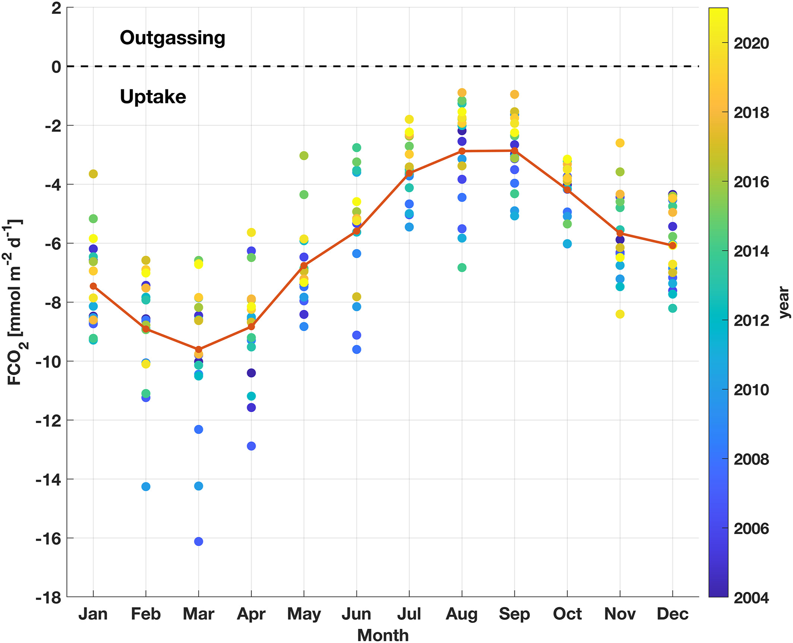

Carbon observations and air–sea CO₂ exchange
I use shipboard measurements, autonomous BGC-Argo observations, and time-series data to understand how physical and biological processes regulate dissolved inorganic carbon, pCO₂, and air–sea CO₂ flux.